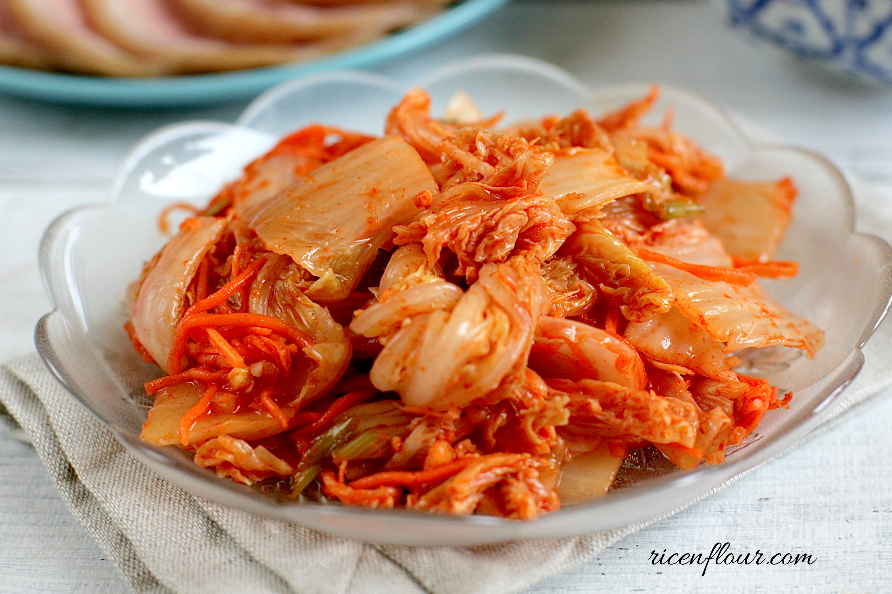
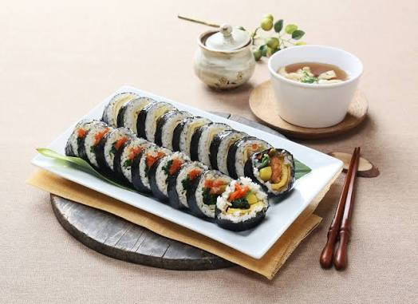
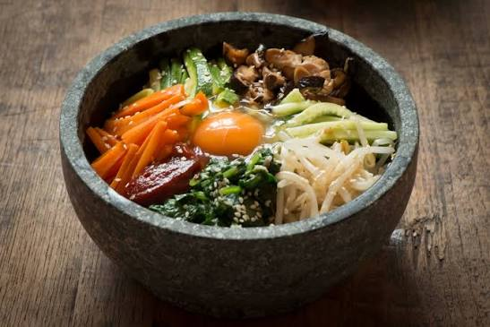
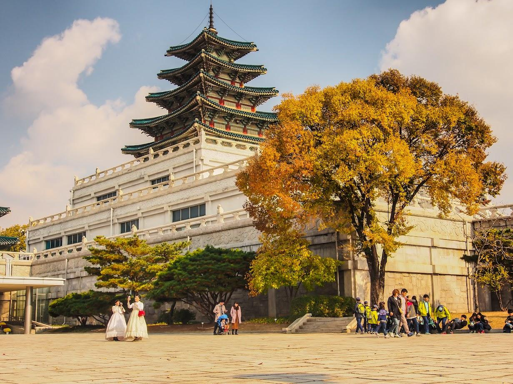
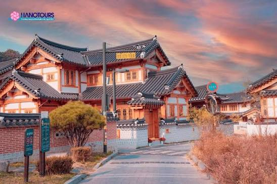
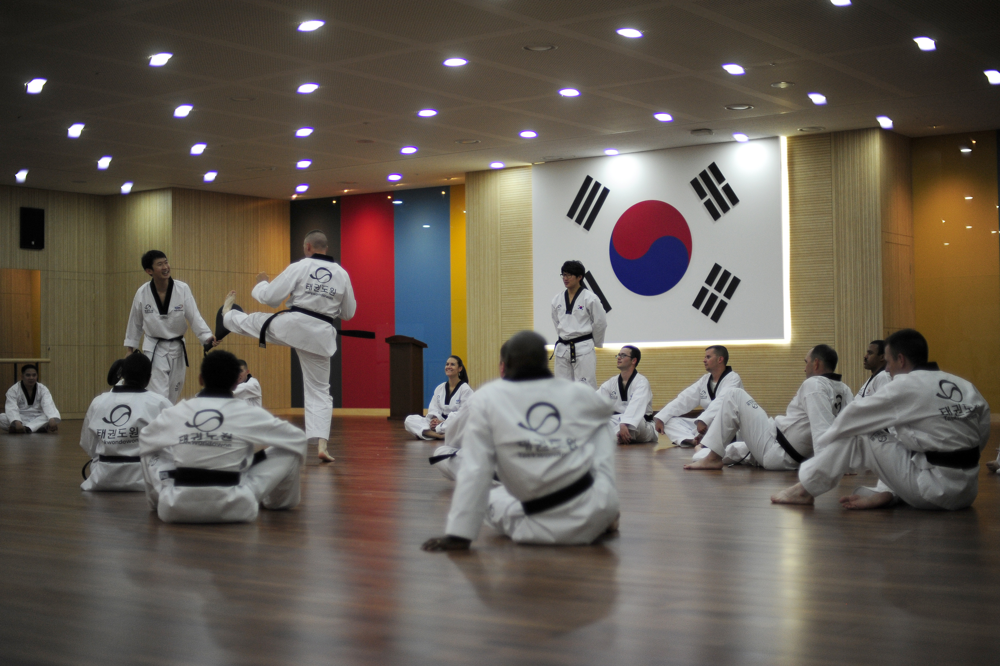

Tinh Hoa Ẩm Thực Xứ Sở Kim Chi

1. Kimchi (Kim Chi Cải Thảo)
Món ăn quốc hồn quốc túy không thể thiếu trên bàn ăn người Hàn, được lên men từ cải thảo, bột ớt Hàn Quốc và gia vị tươi.
Ấn vào để xem Nguồn gốc, Hương vị & Quy trình muối Kimchi →

2. Kimbap (Cơm Cuộn Rong Biển)
Những khoanh cơm trắng trộn dầu mè thơm ngậy cuộn trong lá rong biển khô cùng trứng chiên, cà rốt, củ cải vàng và thanh cua.
Ấn vào để xem Nguồn gốc, Hương vị & Cách cuộn Kimbap đẹp mắt →

3. Bibimbap (Cơm Trộn Hàn Quốc)
Tô cơm nóng hổi hội tụ triết lý ngũ hành âm dương với 5 sắc màu từ rau củ, thịt bò, trứng ốp la và tương ớt Gochujang.
Ấn vào để xem Nguồn gốc, Hương vị & Cách làm Cơm trộn Bibimbap →
Địa Điểm Du Lịch Nổi Tiếng Hàn Quốc

1. Cung Điện Gyeongbokgung (Cảnh Phúc Cung)
Cung điện lớn và đồ sộ nhất trong Ngũ Đại Hoàng Cung của triều đại Joseon, tọa lạc uy nghiêm tại trung tâm thủ đô Seoul.
Ấn vào để xem Lịch sử xây dựng, Kiến trúc & Lễ đổi gác hoàng gia →
2. Tỉnh Gangwon-do
Thiên đường thiên nhiên phía Đông Bắc Hàn Quốc nổi tiếng với vườn quốc gia Seoraksan, đảo Nami thơ mộng và các khu trượt tuyết Thế vận hội mùa đông.
Ấn vào để xem Cảnh sắc bốn mùa & Trải nghiệm du lịch Gangwon-do →

3. Làng Cổ Bukchon Hanok
Ngôi làng truyền thống hơn 600 năm tuổi lưu giữ nguyên vẹn hàng trăm ngôi nhà gỗ Hanok cổ kính của tầng lớp quý tộc Joseon xưa.
Ấn vào để xem Nguồn gốc, Kiến trúc nhà Hanok & Hoạt động tham quan →
Lịch Sử Và Văn Hóa Hàn Quốc
1. Lịch Sử Thời Kì Phong Kiến Hàn Quốc
Quá trình phát triển từ thời Tam Quốc (Goguryeo, Baekje, Silla) đến vương triều Goryeo và sự thịnh trị của triều đại Joseon với việc sáng tạo chữ Hangeul.
Ấn vào để xem Các triều đại lịch sử & Di sản văn hóa tiêu biểu →

2. Quốc Võ Taekwondo
Môn võ truyền thống của Hàn Quốc nổi bật với những đòn chân uy lực, tốc độ và triết lý rèn luyện đạo đức, kỷ luật kiên cường.
Ấn vào để xem Nguồn gốc, Đặc điểm kỹ thuật & Tinh thần võ đạo →
3. Nền Phim Ảnh Hàn Quốc (K-Cinema & K-Drama)
Trụ cột của làn sóng Hallyu chinh phục khán giả toàn cầu và giải thưởng Oscar, Cannes nhờ kịch bản giàu tính nhân văn và kỹ thuật điện ảnh xuất sắc.
Ấn vào để xem Sự phát triển, Tác phẩm tiêu biểu & Sức ảnh hưởng →